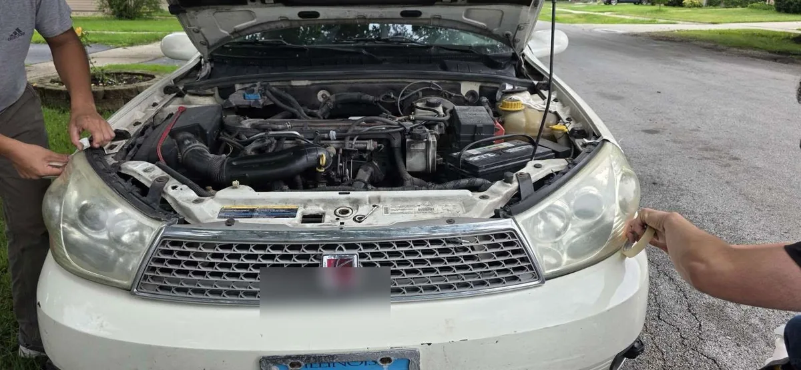
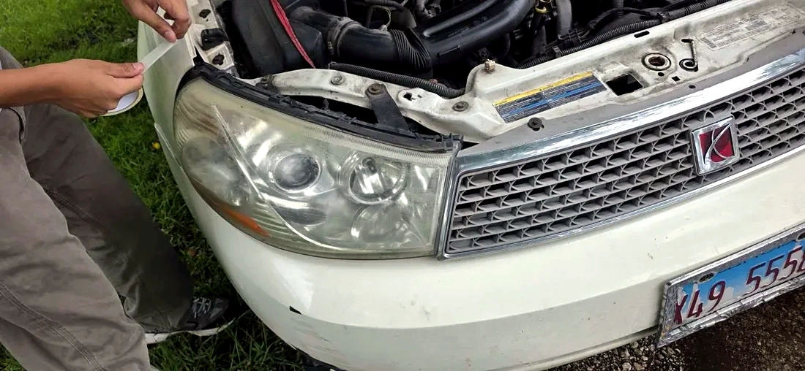
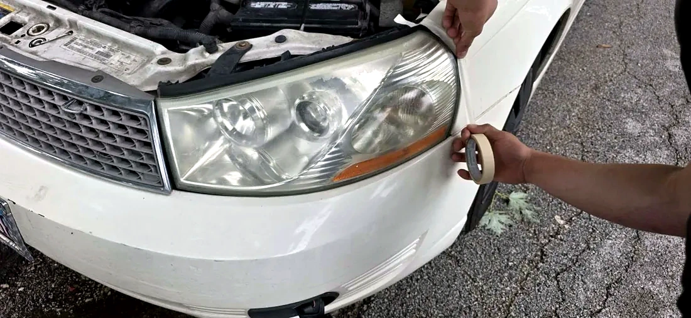

Mobile headlight restoration • Southwest Chicago suburbs
Clearer headlights without replacing the whole assembly.
BrightRoute helps drivers fix cloudy, yellow, oxidized plastic headlights with a mobile sanding, polishing, and UV-protection process — quoted from photos before you book.
- Mobile Service
- UV Protection
- Clear Expectations
- Affordable vs. Replacement


Slide to reveal a real BrightRoute before/after result — cloudy lens to clear finish.
Why it matters
Foggy headlights are more than cosmetic.
Oxidation blocks light output, makes your vehicle look older, and can make nighttime driving more stressful. Replacing headlight assemblies can cost hundreds — restoration is the smart first step.

Real results
Before & after proof that sells the service.
Only the strongest visuals were used. The comparison below is the most persuasive transformation from the uploaded photos.


Oxidized lens restored to a clear finish
Selected as the hero transformation because it shows a dramatic difference without needing explanation.

Finished clarity
A polished close-up that builds trust and shows the end result.

Careful prep
Shows masking and on-site work without relying on generic stock photos.
Who it helps
A practical upgrade for daily drivers, sellers, families, and small fleets.
Night drivers
Clearer lenses can help more light reach the road, especially on older vehicles with yellowed plastic headlights.
Car sellers
Restored headlights make the whole front end look newer in marketplace photos and driveway walkarounds.
Daily commuters
A fast on-site appointment avoids dropping the car off at a shop or buying expensive replacement assemblies.
Dealers & small fleets
Batch pricing can make sense for multiple cars in the same driveway, lot, or workplace parking area.
Easy quote flow
Book without guessing whether your headlights are restorable.
Because every lens is different, BrightRoute should quote from photos first. That keeps expectations honest and avoids promising “brand new” results when a lens has cracks, moisture, or inside damage.
Text 3 photos
Front of vehicle, close-up of left headlight, close-up of right headlight.
Get a clear recommendation
Standard restoration, premium UV protection, heavy oxidation quote, or replacement advice if restoration is not the right fix.
Choose a time
Home, workplace, or convenient local mobile appointment.
See the result before payment
Final walkthrough confirms the improvement and gives maintenance advice.
What to text
- Vehicle year / make / model
- Your city or cross streets
- Photos of both headlights in daylight
- Whether you want standard or UV-protected service
Professional process
More thorough than a quick DIY wipe-on kit.
Inspection
We inspect lens condition and confirm whether restoration is the right solution before starting.
Masking & sanding
Paint and trim are protected, then oxidation is leveled with a controlled sanding process.
Restoration
The lens is refined through multiple stages to remove haze, yellowing, and surface damage.
Polishing
Polishing restores clarity and gloss so the headlight looks clean again.
UV protection
A protective finish helps slow future oxidation and lasts longer than basic polishing alone.


Why choose BrightRoute
Professional, affordable, and easy to book.
Mobile service
We come to your driveway, workplace, or a convenient local appointment spot.
Affordable pricing
Restoration is typically far less expensive than replacing full headlight assemblies.
Fast turnaround
Most vehicles can be completed in one appointment without leaving your car at a shop.
Professional equipment
Multi-step prep, sanding, polish, and protection — not a one-step wipe.
Satisfaction-focused
We set expectations honestly and aim for a result you can see immediately.
Text-first quoting
Send photos of your headlights and get a quick estimate without a long phone call.
Honest expectations
Restoration is powerful, but it is not magic.
Usually improves
- Yellowing and cloudy surface oxidation
- Dull, chalky plastic lenses
- Light scratches and road haze
- Vehicle appearance and front-end curb appeal
May need replacement
- Cracked lenses
- Water or fog trapped inside the headlight
- Burnt reflectors or projector damage
- Deep gouges through the lens surface
Aftercare
- Wash gently for the first day
- Avoid harsh abrasives on the lens
- Park in shade when possible
- Ask about maintenance coating if the car sits outside
Service promise
No-pressure quote. Clear expectation. Visible improvement.
BrightRoute should win trust by being honest: if replacement is the better option, say so. If restoration makes sense, show the customer exactly what will be done and why UV protection matters.
✓ Photo-based estimate✓ Paint/trim masking✓ Multi-stage correction✓ UV protection option✓ Final walkthrough
Simple pricing
Clear packages. No confusing menu.
Good
Standard Restoration
From $69
Best for light-to-medium haze. Includes prep, sanding/polishing, and clarity restoration.
Request thisMost popular
Premium + UV Protection
From $99
Recommended for most customers. Includes deeper correction plus a UV-protective finish.
Get premium quoteSevere haze
Heavy Oxidation
Photo quote
For badly yellowed or scratched lenses. Send photos so we can price it honestly.
Text photosExact pricing can vary by lens condition, vehicle access, service location, and whether the lens needs heavier correction.
Trust signals
Built to earn trust before the first appointment.
Customer feedback should be added only after real reviews are collected. Until then, this section focuses on transparent process details customers can verify.
Photo-first screening
Customers send both headlights before booking so expectations match the condition of the actual lenses.
Visible prep work
Masking, controlled sanding, polishing, and UV protection are explained clearly instead of hiding behind vague “cleaning” language.
Replacement honesty
If damage is inside the housing, cracked, or moisture-related, the site tells customers restoration may not be the right fix.
Local service area
Mobile headlight restoration across the Chicago Southwest Suburbs and nearby Cook County communities.
BrightRoute is positioned for driveway, workplace, and local meet-up appointments where there is safe vehicle access. Send your city or cross streets with photos so availability and travel time are clear before booking.
- Headlight restoration near me
- Mobile headlight restoration in the Chicago Southwest Suburbs
- Foggy headlight repair and polishing in Cook County
- Yellow headlight cleaning with UV protection option
Oak LawnBurbankBridgeviewChicago RidgeOrland ParkWorthPalos HillsEvergreen ParkAlsipNearby suburbs
Service area is centered on the Chicago Southwest Suburbs. Exact availability can be confirmed during the photo quote.
FAQ
Common questions
How long will restored headlights last?
Longevity depends on lens condition, sun exposure, parking habits, and maintenance. UV protection helps the result last longer than a basic polish, but no coating lasts forever.
Can every headlight be restored?
No. Most oxidized plastic lenses can improve dramatically, but cracked lenses, trapped moisture, burned reflectors, or internal damage may require replacement instead.
Will my headlights look brand new?
Some headlights finish extremely clear, while older or damaged lenses may keep small marks. The goal is visible improvement, clearer appearance, and better value than replacement when the lens is restorable.
Is this better than a DIY kit?
DIY kits can help light haze, but they often skip thorough prep and long-term protection. A professional process is more consistent for oxidation that has built up over time.
What should I send for a quote?
Send a front vehicle photo, a close-up of each headlight in daylight, the vehicle year/make/model, and your city or cross streets.
What if only one headlight is cloudy?
Both lenses should still be photographed. A matched pair usually looks better, but the final recommendation can be based on the actual condition.
Get a fast quote
Send the details needed for an honest estimate.
For the fastest estimate, include both headlight photos, vehicle year/make/model, city or cross streets, and whether you want standard restoration or UV protection.
Prefer email? brightroutemyj@gmail.com